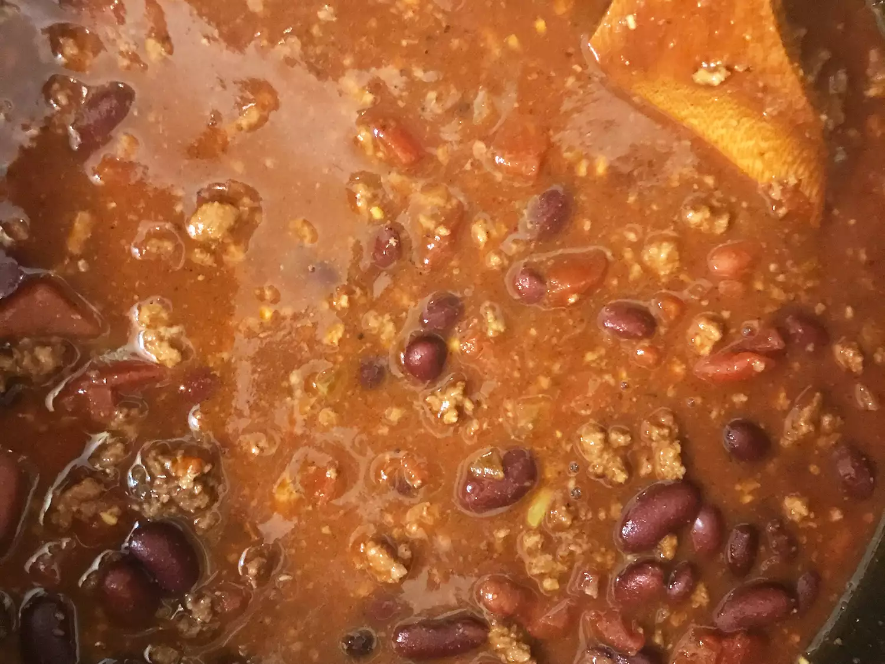

Home
Pressure Cooker Chili

Description
This hearty pressure cooker chili is delicious — so good on a cold snowy day. What's even better is having it
ready within 35 minutes from start to finish!
Ingredients
- 1 pound ground beef
- 2 teaspoons olive oil
- 1 sweet onion, chopped
- 1 small green bell pepper, finely chopped
- 1 jalapeno pepper, seeded and finely chopped
- 2 cloves garlic, minced
- 2 (14.5 ounce) cans diced tomatoes, undrained
- 2 (14.5 ounce) cans dark red kidney beans, drained and rinsed
- 2 cups water
- 3 tablespoons tomato paste
- 2 tablespoons chili powder
- 1 tablespoon dark brown sugar
- 2 teaspoons unsweetened cocoa powder
- 2 teaspoons ground cumin
- ½ teaspoon kosher salt, or to taste
- ¼ teaspoon crushed red pepper flakes, or to taste
Steps
- Place ground beef in the pressure cooker over medium-high heat; cook until brown and crumbly, 8 to 10 minutes. Remove beef; drain off excess fat.
- Heat olive oil in the pressure cooker over medium heat; stir in onion, green pepper, and jalapeño. Cook and stir until onion has softened, about 3 to 4 minutes. Add garlic; cook and stir for about 30 seconds. Stir in browned beef, diced tomatoes, kidney beans, water, tomato paste, chili powder, brown sugar, cocoa powder, cumin, salt, and red pepper flakes.
- Lock the lid, bring the cooker up to pressure, reduce heat to maintain pressure, and cook for 8 minutes. Remove the cooker from the heat, and let the pressure reduce on its own, 5 to 10 minutes.
- When the pressure is fully released, remove the lid, stir the chili and serve.